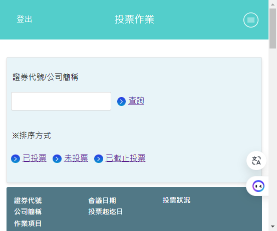
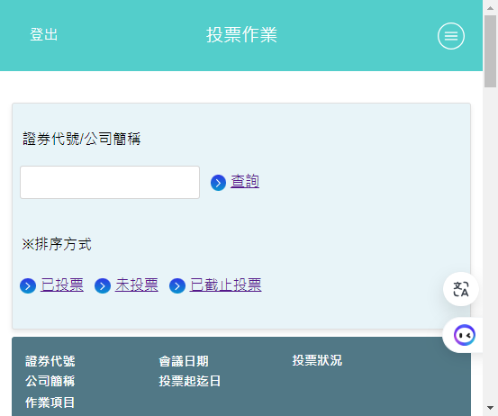
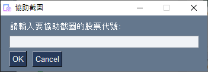

自我確認事項
- 電腦環境： Windows作業系統 + Chrome瀏灠器
- 執行投票前，請確認TDCC集保安控中介程式已啟動(如下圖示)，否則無法成功登入！
- 確認所有投票帳號的券商網路下單憑證已匯入Chrome憑證管理，在電子投票網頁按下登入後即可直接登入，不會再有多餘的手動選擇憑證動作！
 

※不支援其它種類憑證及其它瀏覽器！
※Chrome憑證管理可參考股東e服務網站的PDF說明文件，第二項，步驟 4 可按匯入按鈕匯入憑證！
※按鍵精靈點擊流程乃參考過往經驗執行，若將來某檔投票流程有與過往經驗不同之處，將會無法執行，需手動投票。
 Set IDs：設定所有投票者的完整身份證字號，填完後直接按☒離開！
Set IDs：設定所有投票者的完整身份證字號，填完後直接按☒離開！範例：假設 ID001~ID004 為已註冊身份證字號，ID005 為已試用過身份證字號，ID006 為黑名單身份證字號，ID007 為未註冊身份證字號！

※末5碼註冊信箱，請參考註冊訊息。
 Auto Voting：投票按鈕，按下即開始進行投票
Auto Voting：投票按鈕，按下即開始進行投票
正常情況下，投完會出現結束投票，請關閉此視窗！
※如果一直沒有出現，可能某個thread卡住了，請將程式完全關閉並重啟，不要直接再按投票按鈕！
投票結果摘要：
主目錄下，會建立對應的截圖文件夾：
截圖文件夾中，為 .png 圖檔：

※如需將截圖彙整成 PDF，請先不要修改截圖文件夾路徑及名稱，待執行完
 Create PDF：按下後，將投票產生的截圖文件夾，彙整成 A4 大小的 PDF 檔。
Create PDF：按下後，將投票產生的截圖文件夾，彙整成 A4 大小的 PDF 檔。主目錄下，會建立對應的 PDF 檔：
雙行條碼截圖，每頁約可放下 9 張截圖：

列印後，以條碼槍實測，可正確掃瞄出條碼內容。
彙整完後，即可將截圖文件夾整理移動至其它路徑！若不移動，則下次彙整時，將會再次被重複彙整。
 Rename PNG：按下後，將投票產生的截圖文件夾，PNG檔名中的"ID001"變更為指定的名字。
Rename PNG：按下後，將投票產生的截圖文件夾，PNG檔名中的"ID001"變更為指定的名字。變更前，截圖文件夾中的png檔名：
欲變更的欄位，填上對應的名字，按下"開始變更"：
變更後，截圖文件夾檔名：
未輸入名字的欄位則不會變更。
填入要撤銷的代號
選擇所有帳號，或是個別詢問
若選"Cancel"，則每個ID會再個別詢問是否協助進行撤銷
※協助撤銷時，需搭配手動選取該 ID 對應的憑證！
填入要截圖的代號

選擇所有帳號，或是個別詢問
若選"Cancel"，則每個ID會再個別詢問是否協助進行截圖